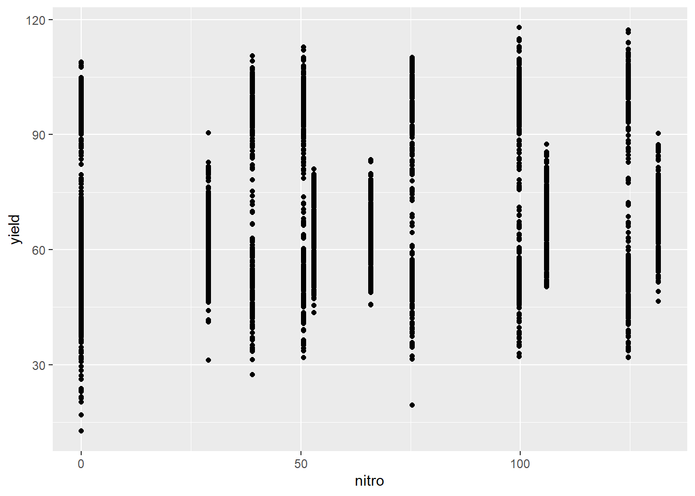
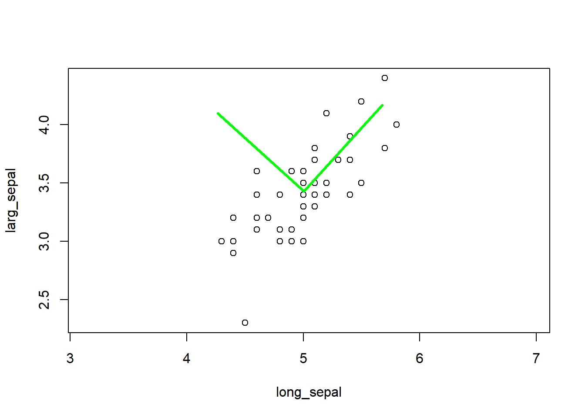
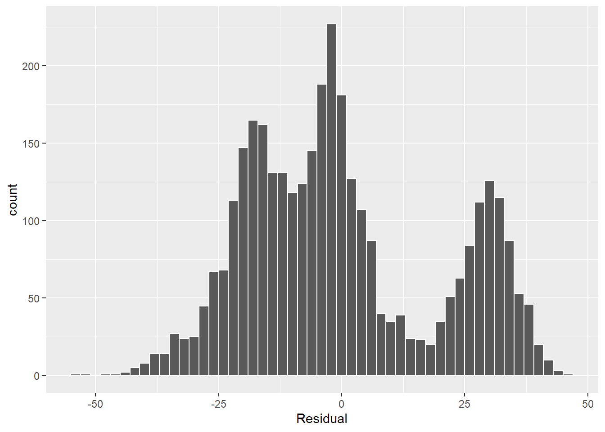
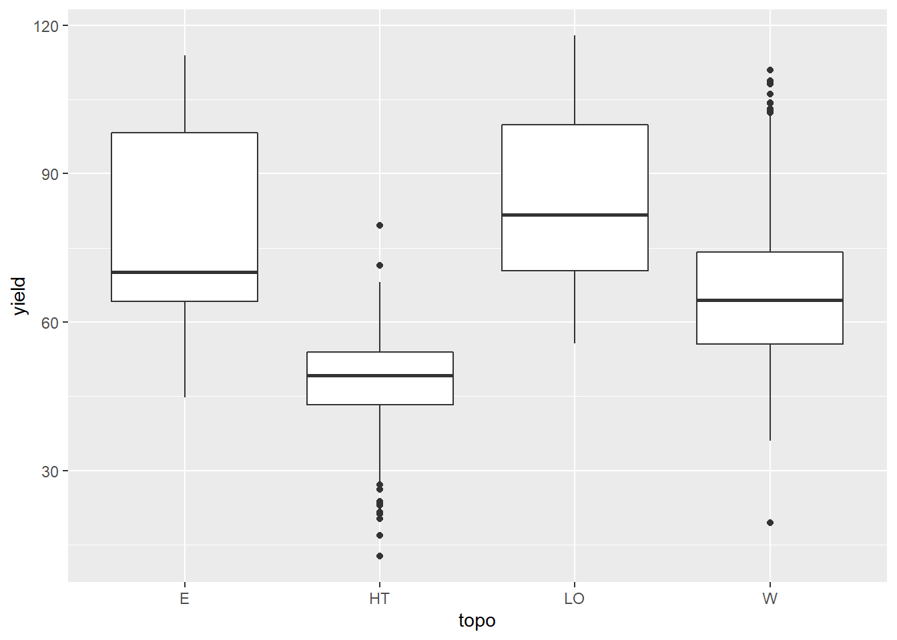
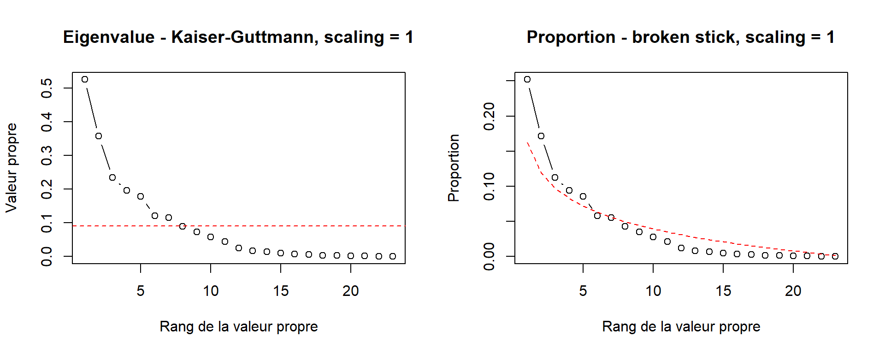
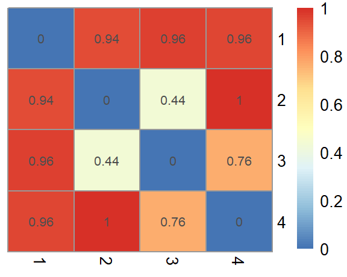
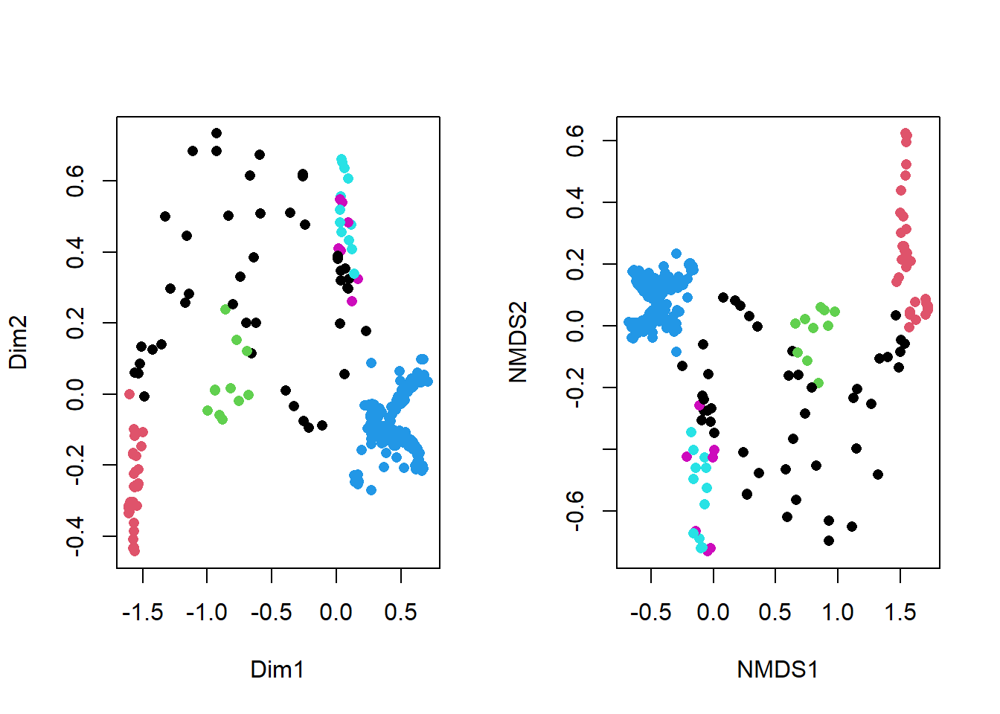
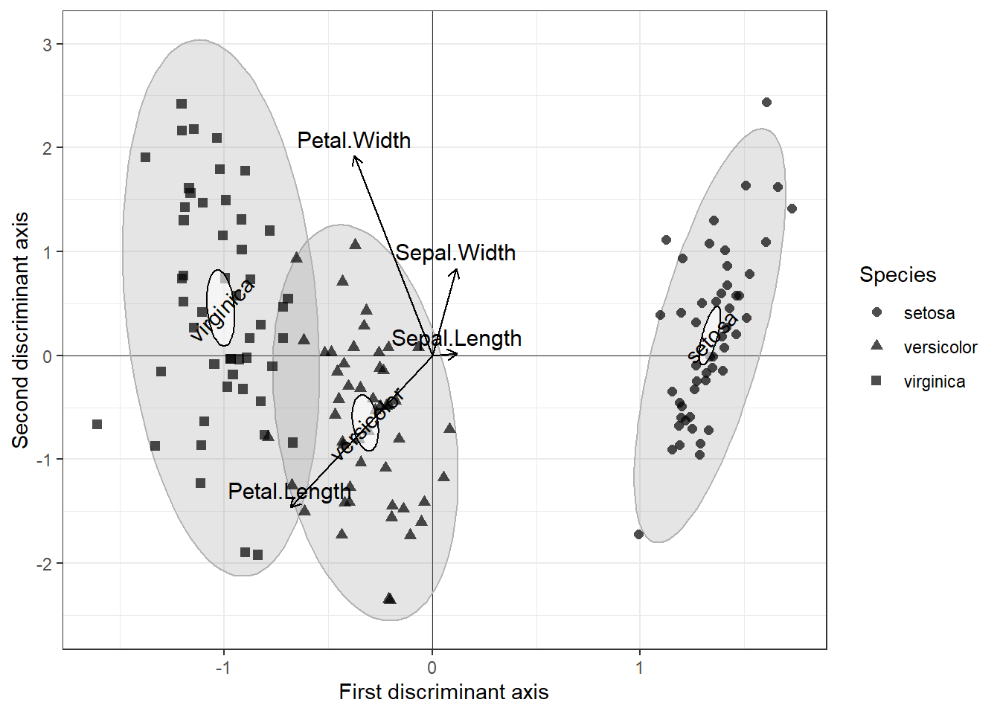

Chapitre 7 Modèles statistiques
️ Objectifs spécifiques:
La modélisation statistique consiste à lier de manière explicite des variables de sortie \(y\) (ou variables-réponse ou variables dépendantes) à des variables explicatives \(x\) (ou variables prédictives / indépendantes / covariables). Les variables-réponse sont modélisées par une fonction des variables explicatives ou prédictives.
Pourquoi garder les termes explicatives et prédictives ? Parce que les modèles statistiques (basés sur des données et non pas sur des mécanismes) sont de deux ordres.
D’abord, les modèles prédictifs sont conçus pour prédire de manière fiable une ou plusieurs variables-réponse à partir des informations contenues dans les variables qui sont, dans ce cas, prédictives. Ces modèles sont couverts dans le chapitre … de ce manuel (si on le couvre).
Lorsque l’on désire tester des hypothèses pour évaluer quelles variables expliquent la réponse, on parlera de modélisation (et de variables) explicatives.
En inférence statistique, on évaluera les corrélations entre les variables explicatives et les variables-réponse. Un lien de corrélation n’est pas un lien de causalité. L’inférence causale peut en revanche être évaluée par des modèles d’équations structurelles, sujet qui fera éventuellement partie de ce cours.
Cette section couvre la modélisation explicative. Les variables qui contribuent à créer les modèles peuvent être de différentes natures et distribuées selon différentes lois de probabilité.
Alors que les modèles linéaires simples (lm) impliquent une variable-réponse distribuée de manière continue,
les modèles linéaires généralisés peuvent aussi expliquer des variables de sorties discrètes.
Dans les deux cas, on distinguera les variables fixes et les variables aléatoires.
Les variables fixes sont les variables testées lors de l’expérience : dose du traitement, espèce/cultivar, météo, etc.
Les variables aléatoires sont les sources de variation qui génèrent du bruit dans le modèle : les unités expérimentales ou le temps lors de mesures répétées.
Les modèles incluant des effets fixes seulement sont des modèles à effets fixes. Généralement, les modèles incluant des variables aléatoires incluent aussi des variables fixes : on parlera alors de modèles mixtes. Nous couvrirons ces deux types de modèles.
7.1 Modèles à effets fixes
Les tests de t et de Wilcoxon, explorés précédemment, sont des modèles statistiques à une seule variable. Nous avons vu dans l’interface-formule qu’une variable-réponse peut être liée à une variable explicative avec le tilde ~.
En particulier, le test de t est une régression linéaire univariée (à une seule variable explicative) dont la variable explicative comprend deux catégories.
De même, l’anova est une régression linéaire univariée dont la variable explicative comprend plusieurs catégories.
Or l’interface-formule peut être utilisé dans plusieurs circonstances, notamment pour ajouter plusieurs variables de différents types : on parlera de régression multivariée.
La plupart des modèles statistiques peuvent être approximés comme une combinaison linéaire de variables : ce sont des modèles linéaires.
Les modèles non-linéaires impliquent des stratégies computationnelles complexes qui rendent leur utilisation plus difficile à manœuvrer.
Un modèle linéaire univarié prendra la forme \(y = \beta_0 + \beta_1 x + \epsilon\), où \(\beta_0\) est l’intercept et \(\beta_1\) est la pente et \(\epsilon\) est l’erreur.
Vous verrez parfois la notation \(\hat{y} = \beta_0 + \beta_1 x\). La notation avec le chapeau \(\hat{y}\) exprime qu’il s’agit des valeurs générées par le modèle. En fait, \(y = \hat{y} - \epsilon\).
7.1.1 Modèle linéaire univarié avec variable continue
Prenons les données lasrosas.corn incluses dans le module agridat, où l’on retrouve le rendement d’une production de maïs à dose d’azote variable, en Argentine.
library("tidyverse")
library("agridat")
data("lasrosas.corn")
sample_n(lasrosas.corn, 10) %>%
as_tibble()## # A tibble: 10 x 9
## year lat long yield nitro topo bv rep nf
## <int> <dbl> <dbl> <dbl> <dbl> <fct> <dbl> <fct> <fct>
## 1 2001 -33.0 -63.8 55.8 75.4 W 181. R3 N3
## 2 1999 -33.1 -63.8 67.8 29 E 161. R1 N1
## 3 2001 -33.0 -63.8 88.8 0 W 172. R2 N0
## 4 2001 -33.1 -63.8 49.2 99.8 HT 169. R1 N4
## 5 2001 -33.0 -63.8 47 0 W 180. R2 N0
## 6 1999 -33.1 -63.8 61.6 0 E 167. R2 N0
## 7 2001 -33.1 -63.8 110. 50.6 E 171. R3 N2
## 8 1999 -33.1 -63.8 73.5 106 LO 155. R1 N4
## 9 2001 -33.1 -63.8 55.6 39 E 180. R2 N1
## 10 1999 -33.1 -63.8 62.4 53 E 178. R2 N2Ces données comprennent plusieurs variables. Prenons le rendement (yield) comme variable de sortie et, pour le moment, ne retenons que la dose d’azote (nitro) comme variable explicative : il s’agit d’une régression univariée. Les deux variables sont continues. Explorons d’abord le nuage de points de l’une et l’autre.

L’hypothèse nulle (Ho) : la dose d’azote n’affecte pas le rendement, c’est à dire que le coefficient de pente est nul.
Une autre hypothèse (Ho) : l’intercept est nul, donc à dose 0, rendement de 0.
Un modèle linéaire à variable de sortie continue est créé avec la fonction lm(), pour linear model.
##
## Call:
## lm(formula = yield ~ nitro, data = lasrosas.corn)
##
## Residuals:
## Min 1Q Median 3Q Max
## -53.183 -15.341 -3.079 13.725 45.897
##
## Coefficients:
## Estimate Std. Error t value Pr(>|t|)
## (Intercept) 65.843213 0.608573 108.193 < 2e-16 ***
## nitro 0.061717 0.007868 7.845 5.75e-15 ***
## ---
## Signif. codes: 0 '***' 0.001 '**' 0.01 '*' 0.05 '.' 0.1 ' ' 1
##
## Residual standard error: 19.66 on 3441 degrees of freedom
## Multiple R-squared: 0.01757, Adjusted R-squared: 0.01728
## F-statistic: 61.54 on 1 and 3441 DF, p-value: 5.754e-15Le diagnostic du modèle comprend plusieurs informations :
d’abord la formule utilisée, affichée pour la traçabilité,
viens ensuite un aperçu de la distribution des résidus. La médiane devrait s’approcher de la moyenne des résidus (qui est toujours de 0). Bien que le
-3.079peut sembler important, il faut prendre en considération l’échelle de \(y\), et ce-3.079est exprimé en terme de rendement, ici en quintaux (i.e. 100 kg) par hectare. La distribution des résidus mérite d’être davantage investiguée. Nous verrons cela un peu plus tard.Les coefficients apparaissent ensuite.
Les estimés sont les valeurs des effets.
R fournit aussi l’erreur standard associée, la valeur de t ainsi que la p-value (la probabilité d’obtenir cet effet ou un effet plus extrême si en réalité il y avait absence d’effet).
L’intercept est bien sûr plus élevé que
0(à dose nulle, on obtient65.8q/ha en moyenne).La pente de la variable
nitroest de~0.06: pour chaque augmentation d’\(1~kg/ha\) de dose, on obtient~0.06q/ha de plus de maïs. Donc pour 100 kg/ha de N, on obtient un rendement moyen de 6 quintaux (600 kg) de plus que l’intercept.Soulignons que l’ampleur du coefficient est très important pour guider la fertilisation : ne rapporter que la p-value, ou ne rapporter que le fait qu’elle est inférieure à \(0.05\) (ce qui arrive souvent dans la littérature), serait très insuffisant pour l’interprétation des statistiques.
La p-value nous indique néanmoins qu’il serait très improbable qu’une telle pente ait été générée alors que celle-ci est nulle en réalité.
Les étoiles à côté des p-values indiquent l’ampleur selon l’échelle
Signif. codesindiquée en-dessous du tableau des coefficients.
Sous ce tableau, R offre d’autres statistiques. En outre, les R² et R² ajustés indiquent si la régression passe effectivement par les points. Le R² prend un maximum de 1 lorsque la droite passe exactement sur les points.
Enfin, le test de F génère une p-value indiquant la probabilité que ces coefficients de pente ait été générés si les vrais coefficients étaient nuls. Dans le cas d’une régression univariée, cela répète l’information sur l’unique coefficient.
On pourra également obtenir les intervalles de confiance avec la fonction confint().
## 2.5 % 97.5 %
## (Intercept) 64.65001137 67.03641474
## nitro 0.04629164 0.07714271Ou soutirer l’information de différentes manières, comme avec la fonction coefficients().
## (Intercept) nitro
## 65.84321305 0.06171718Également, on pourra exécuter le modèle sur les données qui ont servi à le générer :
## 1 2 3 4 5
## 73.95902 73.95902 73.95902 73.95902 73.95902Ou sur des données externes.
nouvelles_donnees <- data.frame(nitro = seq(from = 0, to = 100, by = 5))
predict(modlin_1, newdata = nouvelles_donnees)[1:5]## 1 2 3 4 5
## 65.84321 66.15180 66.46038 66.76897 67.077567.1.2 Analyse des résidus
Les résidus sont les erreurs du modèle. C’est le vecteur \(\epsilon\), qui est un décalage entre les données et le modèle. Le R² est un indicateur de l’ampleur du décalage, mais une régression linéaire explicative en bonne et due forme devrait être accompagnée d’une analyse des résidus. On peut les calculer par \(\epsilon = y - \hat{y}\), mais aussi bien utiliser la fonction residuals().
res_df <- data.frame(nitro = lasrosas.corn$nitro,
residus_lm = residuals(modlin_1),
residus_calcul = lasrosas.corn$yield - predict(modlin_1))
sample_n(res_df, 10)## nitro residus_lm residus_calcul
## 324 0.0 -21.053213 -21.053213
## 2741 50.6 24.413898 24.413898
## 359 0.0 3.706787 3.706787
## 1366 106.0 -5.525234 -5.525234
## 2211 39.0 33.239817 33.239817
## 284 0.0 1.156787 1.156787
## 2930 124.6 16.286827 16.286827
## 19 131.5 -14.629022 -14.629022
## 1627 53.0 2.835777 2.835777
## 1590 53.0 -1.794223 -1.794223Dans une bonne régression linéaire, on ne retrouvera pas de structure identifiable dans les résidus, c’est-à-dire que les résidus seront bien distribués de part et d’autre du modèle de régression.
ggplot(res_df, aes(x = nitro, y = residus_lm)) +
geom_point() +
labs(x = "Dose N", y = "Résidus") +
geom_hline(yintercept = 0, col = "red", size = 1)
Bien que le jugement soit subjectif, on peut dire avec confiance qu’il n’y a pas de structure particulière. En revanche, on pourrait générer un \(y\) qui varie de manière quadratique avec \(x\), un modèle linéaire montrera une structure évidente.
set.seed(36164)
x <- 0:100
y <- 10 + x*1 + x^2 * 0.05 + rnorm(length(x), 0, 50)
modlin_2 <- lm(y ~ x)
ggplot(data.frame(x, residus = residuals(modlin_2)), aes(x = x, y = residus)) +
geom_point() +
labs(x = "x", y = "Résidus") +
geom_hline(yintercept = 0, col = "red", size = 1)
De même, les résidus ne devraient pas croître avec \(x\).
set.seed(3984)
x <- 0:100
y <- 10 + x + x * rnorm(length(x), 0, 2)
modlin_3 <- lm(y ~ x)
ggplot(data.frame(x, residus = residuals(modlin_3)), aes(x = x, y = residus)) +
geom_point() +
labs(x = "x", y = "Résidus") +
geom_hline(yintercept = 0, col = "red", size = 1)
On pourra aussi inspecter les résidus avec un graphique de leur distribution. Reprenons notre modèle de rendement du maïs.
ggplot(res_df, aes(x = residus_lm)) +
geom_histogram(binwidth = 2, color = "white") +
labs(x = "Residual")
L’histogramme devrait présenter une distribution normale. Les tests de normalité comme le test de Shapiro-Wilk peuvent aider, mais ils sont généralement très sévères (?).
##
## Shapiro-Wilk normality test
##
## data: res_df$residus_lm
## W = 0.94868, p-value < 2.2e-16L’hypothèse nulle que la distribution est normale est rejetée au seuil 0.05. Dans notre cas, il est évident que la sévérité du test (?) n’est pas en cause, car les résidus semblent générer trois ensembles. - Ceci indique que les variables explicatives sont insuffisantes pour expliquer la variabilité de la variable-réponse.
7.1.3 Régression multiple
Comme c’est le cas pour bien des phénomènes en écologie, le rendement d’une culture n’est certainement pas expliqué seulement par la dose d’azote.
Lorsque l’on combine plusieurs variables explicatives, on crée un modèle de régression multivariée, ou une régression multiple. Bien que les tendances puissent sembler non-linéaires, l’ajout de variables et le calcul des coefficients associés reste un problème d’algèbre linéaire.
On pourra en effet généraliser les modèles linéaires, univariés et multivariés, de la manière suivante.
\[ y = X \beta + \epsilon \]
où:
\(X\) est la matrice du modèle à \(n\) observations et \(p\) variables.
\[ X = \left( \begin{matrix} 1 & x_{11} & \cdots & x_{1p} \\ 1 & x_{21} & \cdots & x_{2p} \\ \vdots & \vdots & \ddots & \vdots \\ 1 & x_{n1} & \cdots & x_{np} \end{matrix} \right) \]
\(\beta\) est la matrice des \(p\) coefficients, \(\beta_0\) étant l’intercept qui multiplie la première colonne de la matrice \(X\).
\[ \beta = \left( \begin{matrix} \beta_0 \\ \beta_1 \\ \vdots \\ \beta_p \end{matrix} \right) \]
\(\epsilon\) est l’erreur de chaque observation.
\[ \epsilon = \left( \begin{matrix} \epsilon_0 \\ \epsilon_1 \\ \vdots \\ \epsilon_n \end{matrix} \right) \]
7.1.4 Modèles linéaires univariés avec variable catégorielle nominale
Une variable catégorielle nominale (non ordonnée) utilisée à elle seule dans un modèle comme variable explicative, est un cas particulier de régression multiple. En effet, l’encodage catégoriel (ou dummyfication) transforme une variable catégorielle nominale en
- une matrice de modèle comprenant une colonne désignant l’intercept
- (une série de 1) désignant la catégorie de référence, ainsi que
- des colonnes pour chacune des autres catégories désignant l’appartenance (1) ou la non appartenance (0) à la catégorie désignée par la colonne.
7.1.4.1 L’encodage catégoriel
Une variable à \(C\) catégories pourra être déclinée en \(C\) variables dont chaque colonne désigne par un 1 l’appartenance au groupe de la colonne et par un 0 la non-appartenance. Pour l’exemple, créons un vecteur désignant le cultivar de pomme de terre.
data <- data.frame(cultivar = c('Superior', 'Superior', 'Superior',
'Russet', 'Kenebec', 'Russet'))
data## cultivar
## 1 Superior
## 2 Superior
## 3 Superior
## 4 Russet
## 5 Kenebec
## 6 Russet## (Intercept) cultivarRusset cultivarSuperior
## 1 1 0 1
## 2 1 0 1
## 3 1 0 1
## 4 1 1 0
## 5 1 0 0
## 6 1 1 0
## attr(,"assign")
## [1] 0 1 1
## attr(,"contrasts")
## attr(,"contrasts")$cultivar
## [1] "contr.treatment"Nous avons 3 catégories, encodées en 3 colonnes.
- La première colonne est un intercept
- les deux autres décrivent l’absence (0) ou la présence (1) des cultivars Russet et Superior.
- Le cultivar Kenebec est absent du tableau. En effet, en partant du principe que l’appartenance à une catégorie est mutuellement exclusive, c’est-à-dire qu’un échantillon ne peut être assigné qu’à une seule catégorie, on peut déduire une catégorie à partir de l’information sur toutes les autres.
Par exemple,
si
cultivar_Russetetcultivar_Superiorsont toutes deux égales à \(0\), on conclura quecultivar_Kenebecest nécessairement égal à \(1\).Et si l’un d’entre
cultivar_Russetetcultivar_Superiorest égal à \(1\),cultivar_Kenebecest nécessairement égal à \(0\).
L’information contenue dans un nombre \(C\) de catégorie peut être encodée dans un nombre \(C-1\) de colonnes. C’est pourquoi, dans une analyse statistique, on désignera une catégorie comme une référence, que l’on détecte lorsque toutes les autres catégories sont encodées avec des \(0\) : cette référence sera incluse dans l’intercept. La catégorie de référence par défaut en R est la première catégorie dans l’ordre alphabétique. On pourra modifier cette référence avec la fonction relevel().
## [1] "Superior" "Kenebec" "Russet"## (Intercept) cultivarKenebec cultivarRusset
## 1 1 0 0
## 2 1 0 0
## 3 1 0 0
## 4 1 0 1
## 5 1 1 0
## 6 1 0 1
## attr(,"assign")
## [1] 0 1 1
## attr(,"contrasts")
## attr(,"contrasts")$cultivar
## [1] "contr.treatment"Pour certains modèles, vous devrez vous assurer vous-même de l’encodage catégoriel. Pour d’autre, en particulier avec l’interface pour formule de R, ce sera fait automatiquement.
7.1.4.2 Exemple d’application
Prenons la topographie du terrain, qui peut prendre plusieurs niveaux.
## [1] "E" "HT" "LO" "W"Explorons le rendement selon la topographie.

Les différences sont évidentes, et la modélisation devrait montrer des effets significatifs.
L’encodage catégoriel peut être visualisé en générant la matrice de modèle avec la fonction model.matrix() et l’interface-formule - sans la variable-réponse.
model.matrix(~ topo, data = lasrosas.corn) %>%
tbl_df() %>% # tbl_df pour transformer la matrice en tableau
sample_n(10) ## Warning: `tbl_df()` is deprecated as of dplyr 1.0.0.
## Please use `tibble::as_tibble()` instead.
## This warning is displayed once every 8 hours.
## Call `lifecycle::last_warnings()` to see where this warning was generated.## # A tibble: 10 x 4
## `(Intercept)` topoHT topoLO topoW
## <dbl> <dbl> <dbl> <dbl>
## 1 1 0 0 0
## 2 1 0 1 0
## 3 1 0 0 1
## 4 1 0 0 1
## 5 1 0 1 0
## 6 1 0 0 1
## 7 1 1 0 0
## 8 1 0 1 0
## 9 1 0 0 1
## 10 1 0 0 0Dans le cas d’un modèle avec une variable catégorielle nominale seule, l’intercept représente la catégorie de référence, ici E. Les autres colonnes spécifient l’appartenance (1) ou la non-appartenance (0) à la catégorie pour chaque observation.
Cette matrice de modèle utilisée pour la régression donnera
- un intercept, qui indiquera l’effet de la catégorie de référence,
- puis les différences entre les catégories subséquentes et la catégorie de référence.
##
## Call:
## lm(formula = yield ~ topo, data = lasrosas.corn)
##
## Residuals:
## Min 1Q Median 3Q Max
## -47.371 -11.933 -1.593 11.080 44.119
##
## Coefficients:
## Estimate Std. Error t value Pr(>|t|)
## (Intercept) 78.6653 0.5399 145.707 <2e-16 ***
## topoHT -30.0526 0.7500 -40.069 <2e-16 ***
## topoLO 6.2832 0.7293 8.615 <2e-16 ***
## topoW -11.8841 0.7039 -16.883 <2e-16 ***
## ---
## Signif. codes: 0 '***' 0.001 '**' 0.01 '*' 0.05 '.' 0.1 ' ' 1
##
## Residual standard error: 14.59 on 3439 degrees of freedom
## Multiple R-squared: 0.4596, Adjusted R-squared: 0.4591
## F-statistic: 975 on 3 and 3439 DF, p-value: < 2.2e-16Le modèle linéaire lm()est équivalent à l’anova, mais les résultats de lm() sont plus élaborés.
## Df Sum Sq Mean Sq F value Pr(>F)
## topo 3 622351 207450 975 <2e-16 ***
## Residuals 3439 731746 213
## ---
## Signif. codes: 0 '***' 0.001 '**' 0.01 '*' 0.05 '.' 0.1 ' ' 1L’analyse de résidus peut être effectuée de la même manière.
7.1.5 Modèles linéaires univariés avec variable catégorielle ordinale
Bien que j’introduise la régression sur variable catégorielle ordinale à la suite de la section sur les variables nominales, nous revenons dans ce cas à une régression simple, univariée. Voyons un cas à 5 niveaux.
statut <- c("Totalement en désaccord", "En désaccord", "Ni en accord,
ni en désaccord", "En accord", "Totalement en accord")
statut_o <- factor(statut, levels = statut, ordered = TRUE)## (Intercept) statut_o.L statut_o.Q statut_o.C statut_o^4
## 1 1 -0.6324555 0.5345225 -3.162278e-01 0.1195229
## 2 1 -0.3162278 -0.2672612 6.324555e-01 -0.4780914
## 3 1 0.0000000 -0.5345225 -4.095972e-16 0.7171372
## 4 1 0.3162278 -0.2672612 -6.324555e-01 -0.4780914
## 5 1 0.6324555 0.5345225 3.162278e-01 0.1195229
## attr(,"assign")
## [1] 0 1 1 1 1
## attr(,"contrasts")
## attr(,"contrasts")$statut_o
## [1] "contr.poly"# ou bien, contr.poly(5) sans passer par model.matrix,
# où 5 est le nombre de niveaux (contraste polynomial)La matrice de modèle a 5 colonnes, soit le nombre de niveaux : un intercept, puis 4 autres désignant différentes valeurs que peuvent prendre les niveaux. Ces niveaux croient-ils linéairement ? De manière quadratique, cubique ou plus loin dans des distributions polynomiales ?
modmat_tidy <- data.frame(statut, model.matrix(~statut_o)[, -1]) %>%
gather(variable, valeur, -statut)
modmat_tidy$statut <- factor(modmat_tidy$statut, levels = statut, ordered = TRUE)
ggplot(data = modmat_tidy, mapping = aes(x = statut, y = valeur)) +
facet_wrap(. ~ variable) +
geom_point() +
theme(axis.text.x = element_text(angle = 45, hjust = 1))Règle générale,
pour les variables ordinales, on préférera une distribution linéaire, et c’est l’option par défaut de la fonction
lm(). L’utilisation d’une autre distribution peut être effectuée à la mitaine en utilisant dans le modèle la colonne désirée de la sortie de la fonctionmodel.matrix().
7.1.6 Régression multiple à plusieurs variables
Reprenons le tableau de données du rendement de maïs.
## year lat long yield nitro topo bv rep nf
## 1 1999 -33.05113 -63.84886 72.14 131.5 W 162.60 R1 N5
## 2 1999 -33.05115 -63.84879 73.79 131.5 W 170.49 R1 N5
## 3 1999 -33.05116 -63.84872 77.25 131.5 W 168.39 R1 N5
## 4 1999 -33.05117 -63.84865 76.35 131.5 W 176.68 R1 N5
## 5 1999 -33.05118 -63.84858 75.55 131.5 W 171.46 R1 N5
## 6 1999 -33.05120 -63.84851 70.24 131.5 W 170.56 R1 N5Pour ajouter des variables au modèle dans l’interface-formule, on additionne les noms de colonne.
- La variable
latdésigne la latitude, - la variable
longdésigne la longitude et - la variable
bv(brightness value) désigne la teneur en matière organique du sol (plusbvest élevée, plus faible est la teneur en matière organique).
##
## Call:
## lm(formula = yield ~ lat + long + nitro + topo + bv, data = lasrosas.corn)
##
## Residuals:
## Min 1Q Median 3Q Max
## -48.405 -11.071 -1.251 10.592 40.078
##
## Coefficients:
## Estimate Std. Error t value Pr(>|t|)
## (Intercept) 1.946e+05 3.309e+04 5.882 4.45e-09 ***
## lat 5.541e+03 4.555e+02 12.163 < 2e-16 ***
## long 1.776e+02 4.491e+02 0.395 0.693
## nitro 6.867e-02 5.451e-03 12.597 < 2e-16 ***
## topoHT -2.665e+01 1.087e+00 -24.520 < 2e-16 ***
## topoLO 5.565e+00 1.035e+00 5.378 8.03e-08 ***
## topoW -1.465e+01 1.655e+00 -8.849 < 2e-16 ***
## bv -5.089e-01 3.069e-02 -16.578 < 2e-16 ***
## ---
## Signif. codes: 0 '***' 0.001 '**' 0.01 '*' 0.05 '.' 0.1 ' ' 1
##
## Residual standard error: 13.47 on 3435 degrees of freedom
## Multiple R-squared: 0.5397, Adjusted R-squared: 0.5387
## F-statistic: 575.3 on 7 and 3435 DF, p-value: < 2.2e-16L’ampleur des coefficients est relative à l’échelle de la variable. En effet, un coefficient de 5541 sur la variable lat n’est pas comparable au coefficient de la variable bv, de -0.5089, étant donné que les variables ne sont pas exprimées avec la même échelle. Pour les comparer sur une même base, on peut centrer (soustraire la moyenne) et réduire (diviser par l’écart-type).
scale_vec <- function(x) as.vector(scale(x))
# la fonction scale() génère une matrice, nous désirons un vecteurmodlin_5_sc <- lm(yield ~ lat + long + nitro + topo + bv, data = lasrosas.corn_sc)
summary(modlin_5_sc)##
## Call:
## lm(formula = yield ~ lat + long + nitro + topo + bv, data = lasrosas.corn_sc)
##
## Residuals:
## Min 1Q Median 3Q Max
## -48.405 -11.071 -1.251 10.592 40.078
##
## Coefficients:
## Estimate Std. Error t value Pr(>|t|)
## (Intercept) 78.9114 0.6666 118.376 < 2e-16 ***
## lat 3.9201 0.3223 12.163 < 2e-16 ***
## long 0.3479 0.8796 0.395 0.693
## nitro 2.9252 0.2322 12.597 < 2e-16 ***
## topoHT -26.6487 1.0868 -24.520 < 2e-16 ***
## topoLO 5.5647 1.0347 5.378 8.03e-08 ***
## topoW -14.6487 1.6555 -8.849 < 2e-16 ***
## bv -4.9253 0.2971 -16.578 < 2e-16 ***
## ---
## Signif. codes: 0 '***' 0.001 '**' 0.01 '*' 0.05 '.' 0.1 ' ' 1
##
## Residual standard error: 13.47 on 3435 degrees of freedom
## Multiple R-squared: 0.5397, Adjusted R-squared: 0.5387
## F-statistic: 575.3 on 7 and 3435 DF, p-value: < 2.2e-16Typiquement, les variables catégorielles, qui ne sont pas mises à l’échelle, donneront des coefficients plus élevés, et devrons être évaluées entre elles et non comparativement aux variables mises à l’échelle.
Une manière conviviale de représenter des coefficients consiste à créer un tableau (fonction tibble()) incluant les coefficients ainsi que leurs intervalles de confiance, puis à les porter graphiquement.
intervals <- tibble(Estimate = coefficients(modlin_5_sc)[-1], # [-1] enlever l'intercept
LL = confint(modlin_5_sc)[-1, 1], # [-1, ] enlever la ligne 1, l'intercept
UL = confint(modlin_5_sc)[-1, 2],
variable = names(coefficients(modlin_5_sc)[-1]))
intervals## # A tibble: 7 x 4
## Estimate LL UL variable
## <dbl> <dbl> <dbl> <chr>
## 1 3.92 3.29 4.55 lat
## 2 0.348 -1.38 2.07 long
## 3 2.93 2.47 3.38 nitro
## 4 -26.6 -28.8 -24.5 topoHT
## 5 5.56 3.54 7.59 topoLO
## 6 -14.6 -17.9 -11.4 topoW
## 7 -4.93 -5.51 -4.34 bvggplot(data = intervals, mapping = aes(x = Estimate, y = variable)) +
geom_vline(xintercept = 0, lty = 2) +
geom_segment(mapping = aes(x = LL, xend = UL, y = variable, yend = variable)) +
geom_point() +
labs(x = "Coefficient standardisé", y = "")
On y voit qu’à l’exception de la variable
long, tous les coefficients sont différents de 0.Le coefficient
bvest négatif, indiquant que plus la valeur debvest élevée (donc plus le sol est pauvre en matière organique), plus le rendement est faible.Plus la latitude
latest élevée (plus on se dirige vers le Nord de l’Argentine - données de ce pays), plus le rendement est élevé.La dose d’azote
nitroa aussi un effet statistique positif sur le rendement.Quant aux catégories topographiques
topo, elles sont toutes différentes de la catégorieE, ne croisant pas le zéro. De plus, les intervalles de confiance ne se chevauchant pas, on peut conclure en une différence significative d’une à l’autre.
Bien sûr, tout cela au seuil de confiance de 0.05.
On pourra retrouver des cas où l’effet combiné de plusieurs variables diffère de l’effet de deux variables prises séparément.
Par exemple, on pourrait évaluer l’effet de l’azote et celui de la topographie dans un même modèle, puis y ajouter une interaction entre l’azote et la topographie, qui définira des effets supplémentaires de l’azote selon chaque catégorie topographique. C’est ce que l’on appelle une interaction.
Dans l’interface-formule, l’interaction entre l’azote et la topographie est notée nitro:topo. Pour ajouter cette interaction, la formule deviendra yield ~ nitro + topo + nitro:topo. Une approche équivalente est d’utiliser le raccourci yield ~ nitro*topo.
##
## Call:
## lm(formula = yield ~ nitro * topo, data = lasrosas.corn_sc)
##
## Residuals:
## Min 1Q Median 3Q Max
## -47.984 -11.985 -1.388 10.339 40.636
##
## Coefficients:
## Estimate Std. Error t value Pr(>|t|)
## (Intercept) 78.6999 0.5322 147.870 < 2e-16 ***
## nitro 1.8131 0.5351 3.388 0.000711 ***
## topoHT -30.0052 0.7394 -40.578 < 2e-16 ***
## topoLO 6.2026 0.7190 8.627 < 2e-16 ***
## topoW -11.9628 0.6939 -17.240 < 2e-16 ***
## nitro:topoHT 1.2553 0.7461 1.682 0.092565 .
## nitro:topoLO 0.5695 0.7186 0.792 0.428141
## nitro:topoW 0.7702 0.6944 1.109 0.267460
## ---
## Signif. codes: 0 '***' 0.001 '**' 0.01 '*' 0.05 '.' 0.1 ' ' 1
##
## Residual standard error: 14.38 on 3435 degrees of freedom
## Multiple R-squared: 0.4756, Adjusted R-squared: 0.4746
## F-statistic: 445.1 on 7 and 3435 DF, p-value: < 2.2e-16Les résultats montrent des effets de l’azote et des catégories topographiques, mais il y a davantage d’incertitude sur les interactions, indiquant que
- l’effet statistique de l’azote est sensiblement le même indépendamment des niveaux topographiques.
Attention à ne pas surcharger le modèle
Il est possible d’ajouter des interactions doubles, triples, quadruples, etc. Mais plus il y a d’interactions, plus votre modèle comprendra de variables et vos tests d’hypothèse perdront en puissance statistique.
7.1.7 Les modèles linéaires généralisés
Dans un modèle linéaire ordinaire, un changement constant dans les variables explicatives résulte en un changement constant de la variable-réponse. Cette supposition ne serait pas adéquate si la variable-réponse était un décompte, si elle est booléenne ou si, de manière générale, la variable-réponse ne suivait pas une distribution continue. Ou, de manière plus spécifique, il n’y a pas moyen de retrouver une distribution normale des résidus ? On pourra bien sûr transformer les variables (sujet du chapitre …, en développement). Mais il pourrait s’avérer impossible, ou tout simplement non souhaitable de transformer les variables.
Le modèle linéaire généralisé (MLG, ou generalized linear model - GLM) est une généralisation du modèle linéaire ordinaire chez qui la variable-réponse peut être caractérisé par une distribution de Poisson, de Bernouilli, etc.
Prenons d’abord cas d’un décompte de vers fil-de-fer (worms) retrouvés dans des parcelles sous différents traitements (trt). Les décomptes sont typiquement distribués selon une loi de Poisson. - Données chargées avec le module agridat.

Explorons les décomptes selon les traitements.

Les traitements semblent à première vue avoir un effet comparativement au contrôle. Lançons un MLG avec la fonction glm(), et spécifions que la sortie est une distribution de Poisson. Bien que la fonction de lien (link = "log") soit explictement imposée, le log est la valeur par défaut pour les distributions de Poisson. Ainsi, les coefficients du modèles devront être interprétés selon un modèle \(log \left(worms \right) = intercept + pente \times coefficient\).
modglm_1 <- glm(worms ~ trt, cochran.wireworms, family = stats::poisson(link="log"))
summary(modglm_1)##
## Call:
## glm(formula = worms ~ trt, family = stats::poisson(link = "log"),
## data = cochran.wireworms)
##
## Deviance Residuals:
## Min 1Q Median 3Q Max
## -1.8279 -0.9455 -0.2862 0.6916 3.1888
##
## Coefficients:
## Estimate Std. Error z value Pr(>|z|)
## (Intercept) 0.1823 0.4082 0.447 0.655160
## trtM 1.6422 0.4460 3.682 0.000231 ***
## trtN 1.7636 0.4418 3.991 6.57e-05 ***
## trtO 1.5755 0.4485 3.513 0.000443 ***
## trtP 1.3437 0.4584 2.931 0.003375 **
## ---
## Signif. codes: 0 '***' 0.001 '**' 0.01 '*' 0.05 '.' 0.1 ' ' 1
##
## (Dispersion parameter for poisson family taken to be 1)
##
## Null deviance: 64.555 on 24 degrees of freedom
## Residual deviance: 38.026 on 20 degrees of freedom
## AIC: 125.64
##
## Number of Fisher Scoring iterations: 5L’interprétation spécifique des coefficients d’une régression de Poisson doit passer par la fonction de lien \(log \left(worms \right) = intercept + pente \times coefficient\). > Le traitement de référence (K), qui correspond à l’intercept, sera accompagné d’un nombre de vers de \(exp \left(0.1823\right) = 1.20\) vers, et le traitement M, à \(exp \left(1.6422\right) = 5.17\) vers.
Cela correspond à ce que l’on observe sur les boxplots plus haut.
Il est très probable (p-value de ~0.66) qu’un intercept (traitement K) de 0.18 ayant une erreur standard de 0.4082 ait été généré depuis une population dont l’intercept est nul.
Quant aux autres traitements, leurs effets sont tous significatifs au seuil 0.05, mais peuvent-ils être considérés comme équivalents ?
intervals <- tibble(Estimate = coefficients(modglm_1), # [-1] enlever l'intercept
LL = confint(modglm_1)[, 1], # [-1, ] enlever la première ligne, celle de l'intercept
UL = confint(modglm_1)[, 2],
variable = names(coefficients(modglm_1))) ## Waiting for profiling to be done...
## Waiting for profiling to be done...## # A tibble: 5 x 4
## Estimate LL UL variable
## <dbl> <dbl> <dbl> <chr>
## 1 0.182 -0.740 0.888 (Intercept)
## 2 1.64 0.840 2.62 trtM
## 3 1.76 0.972 2.74 trtN
## 4 1.58 0.766 2.56 trtO
## 5 1.34 0.509 2.34 trtPggplot(data = intervals, mapping = aes(x = Estimate, y = variable)) +
geom_vline(xintercept = 0, lty = 2) +
geom_segment(mapping = aes(x = LL, xend = UL,
y = variable, yend = variable)) +
geom_point() +
labs(x = "Coefficient", y = "")
Les intervalles de confiance se superposant, on ne peut pas conclure qu’un traitement est lié à une réduction plus importante de vers qu’un autre, au seuil 0.05.
Maintenant, à défaut de trouver un tableau de données plus approprié, prenons le tableau mtcars, qui rassemble des données sur des modèles de voitures. La colonne vs, pour v-shaped, inscrit 0 si les pistons sont droit et 1 s’ils sont placés en V dans le moteur. Peut-on expliquer la forme des pistons selon le poids du véhicule (wt) ?
## mpg cyl disp hp drat wt qsec vs am gear carb
## Fiat 128 32.4 4 78.7 66 4.08 2.200 19.47 1 1 4 1
## Volvo 142E 21.4 4 121.0 109 4.11 2.780 18.60 1 1 4 2
## Hornet 4 Drive 21.4 6 258.0 110 3.08 3.215 19.44 1 0 3 1
## Chrysler Imperial 14.7 8 440.0 230 3.23 5.345 17.42 0 0 3 4
## Datsun 710 22.8 4 108.0 93 3.85 2.320 18.61 1 1 4 1
## Merc 450SL 17.3 8 275.8 180 3.07 3.730 17.60 0 0 3 3Il semble y avoir une tendance: les véhicules plus lourds ont plutôt des pistons droits (vs = 0). Vérifions cela.
##
## Call:
## glm(formula = vs ~ wt, family = stats::binomial(), data = mtcars)
##
## Deviance Residuals:
## Min 1Q Median 3Q Max
## -1.9003 -0.7641 -0.1559 0.7223 1.5736
##
## Coefficients:
## Estimate Std. Error z value Pr(>|z|)
## (Intercept) 5.7147 2.3014 2.483 0.01302 *
## wt -1.9105 0.7279 -2.625 0.00867 **
## ---
## Signif. codes: 0 '***' 0.001 '**' 0.01 '*' 0.05 '.' 0.1 ' ' 1
##
## (Dispersion parameter for binomial family taken to be 1)
##
## Null deviance: 43.860 on 31 degrees of freedom
## Residual deviance: 31.367 on 30 degrees of freedom
## AIC: 35.367
##
## Number of Fisher Scoring iterations: 5Exercice. Analyser les résultats.
7.1.8 Les modèles non-linéaires
La hauteur d’un arbre en fonction du temps n’est typiquement pas linéaire. Elle tend à croître de plus en plus lentement jusqu’à un plateau. De même, le rendement d’une culture traitée avec des doses croissantes de fertilisants tend à atteindre un maximum, puis à se stabiliser.
Ces phénomènes ne peuvent pas être approximés par des modèles linéaires. Examinons les données du tableau engelstad.nitro.
## loc year nitro yield
## 1 Knoxville 1966 0 63.0
## 2 Knoxville 1965 335 61.2
## 3 Jackson 1965 335 73.0
## 4 Jackson 1966 201 61.3
## 5 Jackson 1966 335 59.8
## 6 Knoxville 1964 0 60.9
## 7 Knoxville 1964 67 75.9
## 8 Jackson 1966 67 45.2
## 9 Jackson 1962 201 73.1
## 10 Jackson 1964 335 67.8engelstad.nitro %>%
ggplot(aes(x = nitro, y = yield)) +
facet_grid(year ~ loc) +
geom_line() +
geom_point()
Le modèle de Mitscherlich pourrait être utilisé.
\[ y = A \left( 1 - e^{-R \left( E + x \right)} \right) \]
où \(y\) est le rendement, \(x\) est la dose, \(A\) est l’asymptote vers laquelle la courbe converge à dose croissante, \(E\) est l’équivalent de dose fourni par l’environnement et \(R\) est le taux de réponse.
Explorons la fonction.
mitscherlich_f <- function(x, A, E, R) {
A * (1 - exp(-R*(E + x)))
}
x <- seq(0, 350, by = 5)
y <- mitscherlich_f(x, A = 75, E = 30, R = 0.02)
ggplot(tibble(x, y), aes(x, y)) +
geom_point(data = engelstad.nitro, aes(x = nitro, y = yield)) +
geom_line() +
ylim(c(0, 100))
Exercice. Changez les paramètres pour visualiser comment la courbe réagit.
Nous pouvons décrire le modèle grâce à l’interface formule dans la fonction nls().
Notez que les modèles non-linéaires demandent des stratégies de calcul différentes de celles des modèles linéaires. En tout temps, nous devons identifier des valeurs de départ raisonnables pour les paramètres dans l’argument
start. Vous réussirez rarement à obtenir une convergence du premier coup avec vos paramètres de départ. Le défi est d’en trouver qui permettront au modèle de converger. Parfois, le modèle ne convergera jamais. D’autres fois, il convergera vers des solutions différentes selon les variables de départ choisies.
#modnl_1 <- nls(yield ~ A * (1 - exp(-R*(E + nitro))),
# data = engelstad.nitro,
# start = list(A = 50, E = 10, R = 0.2))Le modèle ne converge pas. Essayons les valeurs prises plus haut, lors de la création du graphique, qui semblent bien s’ajuster.
modnl_1 <- nls(yield ~ A * (1 - exp(-R*(E + nitro))),
data = engelstad.nitro,
start = list(A = 75, E = 30, R = 0.02))Bingo! Voyons maintenant le sommaire.
##
## Formula: yield ~ A * (1 - exp(-R * (E + nitro)))
##
## Parameters:
## Estimate Std. Error t value Pr(>|t|)
## A 75.023427 3.331860 22.517 <2e-16 ***
## E 66.164110 27.251591 2.428 0.0184 *
## R 0.012565 0.004881 2.574 0.0127 *
## ---
## Signif. codes: 0 '***' 0.001 '**' 0.01 '*' 0.05 '.' 0.1 ' ' 1
##
## Residual standard error: 12.34 on 57 degrees of freedom
##
## Number of iterations to convergence: 5
## Achieved convergence tolerance: 8.067e-06Les paramètres sont significativement différents de zéro au seuil 0.05, et donnent la courbe suivante.
x <- seq(0, 350, by = 5)
y <- mitscherlich_f(x,
A = coefficients(modnl_1)[1],
E = coefficients(modnl_1)[2],
R = coefficients(modnl_1)[3])
ggplot(tibble(x, y), aes(x, y)) +
geom_point(data = engelstad.nitro, aes(x = nitro, y = yield)) +
geom_line() + ylim(c(0, 100))
Et les résidus…
tibble(nitro = engelstad.nitro$nitro, res = residuals(modnl_1)) %>%
ggplot(aes(x = nitro, y = res)) +
geom_point() +
geom_hline(yintercept = 0, colour = "red")Les résidus ne sont pas distribués normalement, mais semblent bien partagés de part et d’autre de la courbe.
7.2 Modèles à effets mixtes
Lorsque l’on combine des variables fixes (testées lors de l’expérience) et des variables aléatoire (variation des unités expérimentales), on obtient un modèle mixte. Les modèles mixtes peuvent être univariés, multivariés, linéaires ordinaires ou généralisés ou non linéaires.
À la différence d’un effet fixe, un effet aléatoire sera toujours distribué normalement avec une moyenne de 0 et une certaine variance. Dans un modèle linéaire où l’effet aléatoire est un décalage d’intercept, cet effet s’additionne aux effets fixes :
\[ y = X \beta + Z b + \epsilon \]
où:
\(Z\) est la matrice du modèle à \(n\) observations et \(p\) variables aléatoires. Les variables aléatoires sont souvent des variables nominales qui subissent un encodage catégoriel.
\[ Z = \left( \begin{matrix} z_{11} & \cdots & z_{1p} \\ z_{21} & \cdots & z_{2p} \\ \vdots & \ddots & \vdots \\ z_{n1} & \cdots & z_{np} \end{matrix} \right) \]
\(b\) est la matrice des \(p\) coefficients aléatoires.
\[ b = \left( \begin{matrix} b_0 \\ b_1 \\ \vdots \\ b_p \end{matrix} \right) \]
Le tableau lasrosas.corn, utilisé précédemment, contenait trois répétitions effectuées au cours de deux années, 1999 et 2001. Étant donné que la répétition R1 de 1999 n’a rien à voir avec la répétition R1 de 2001, on dit qu’elle est emboîtée dans l’année.
Le module nlme nous aidera à monter notre modèle mixte.
##
## Attaching package: 'nlme'## The following object is masked from 'package:dplyr':
##
## collapsemmodlin_1 <- lme(fixed = yield ~ lat + long + nitro + topo + bv,
random = ~ 1|year/rep,
data = lasrosas.corn)À ce stade vous devriez commencer à être familier avec l’interface formule et vous deviez saisir l’argument fixed, qui désigne l’effet fixe. L’effet aléatoire, random, suit un tilde ~. À gauche de la barre verticale |, on place les variables désignant les effets aléatoire sur la pente. Nous n’avons pas couvert cet aspect, alors nous le laissons à 1. À droite, on retrouve un structure d’emboîtement désignant l’effet aléatoire : le premier niveau est l’année, dans laquelle est emboîtée la répétition.
## Linear mixed-effects model fit by REML
## Data: lasrosas.corn
## AIC BIC logLik
## 26535.37 26602.93 -13256.69
##
## Random effects:
## Formula: ~1 | year
## (Intercept)
## StdDev: 20.35425
##
## Formula: ~1 | rep %in% year
## (Intercept) Residual
## StdDev: 11.17447 11.35617
##
## Fixed effects: yield ~ lat + long + nitro + topo + bv
## Value Std.Error DF t-value p-value
## (Intercept) -1379436.9 55894.55 3430 -24.679273 0.000
## lat -25453.0 1016.53 3430 -25.039084 0.000
## long -8432.3 466.05 3430 -18.092988 0.000
## nitro 0.0 0.00 3430 1.739757 0.082
## topoHT -27.7 0.92 3430 -30.122438 0.000
## topoLO 6.8 0.88 3430 7.804733 0.000
## topoW -16.7 1.40 3430 -11.944793 0.000
## bv -0.5 0.03 3430 -19.242424 0.000
## Correlation:
## (Intr) lat long nitro topoHT topoLO topoW
## lat 0.897
## long 0.866 0.555
## nitro 0.366 0.391 0.247
## topoHT 0.300 -0.017 0.582 0.024
## topoLO -0.334 -0.006 -0.621 -0.038 -0.358
## topoW 0.403 -0.004 0.762 0.027 0.802 -0.545
## bv -0.121 -0.012 -0.214 -0.023 -0.467 0.346 -0.266
##
## Standardized Within-Group Residuals:
## Min Q1 Med Q3 Max
## -4.32360269 -0.66781575 -0.07450856 0.61587533 3.96434001
##
## Number of Observations: 3443
## Number of Groups:
## year rep %in% year
## 2 6La sortie est semblable à celle de la fonction lm().
7.2.1 Modèles mixtes non-linéaires
Le modèle non linéaire créé plus haut liait le rendement à la dose d’azote. Toutefois, les unités expérimentales (le site loc et l’année year) n’étaient pas pris en considération. Nous allons maintenant les considérer.
Nous devons décider la structure de l’effet aléatoire, et sur quelles variables il doit être appliqué - la décision appartient à l’analyste. Il me semble plus convenable de supposer que le site et l’année affectera le rendement maximum plutôt que l’environnement et le taux: les effets aléatoires seront donc affectés à la variable A. Les effets aléatoires n’ont pas de structure d’emboîtement. L’effet de l’année sur A sera celui d’une pente et l’effet de site sera celui de l’intercept. La fonction que nous utiliserons est nlme().
mm <- nlme(yield ~ A * (1 - exp(-R*(E + nitro))),
data = engelstad.nitro,
start = c(A = 75, E = 30, R = 0.02),
fixed = list(A ~ 1, E ~ 1, R ~ 1),
random = A ~ year | loc)
summary(mm)## Nonlinear mixed-effects model fit by maximum likelihood
## Model: yield ~ A * (1 - exp(-R * (E + nitro)))
## Data: engelstad.nitro
## AIC BIC logLik
## 477.2286 491.889 -231.6143
##
## Random effects:
## Formula: A ~ year | loc
## Structure: General positive-definite, Log-Cholesky parametrization
## StdDev Corr
## A.(Intercept) 2.611534836 A.(In)
## A.year 0.003066832 -0.556
## Residual 11.152757999
##
## Fixed effects: list(A ~ 1, E ~ 1, R ~ 1)
## Value Std.Error DF t-value p-value
## A.(Intercept) 74.58222 4.722715 56 15.792234 0.0000
## E 65.56721 25.533993 56 2.567840 0.0129
## R 0.01308 0.004808 56 2.720215 0.0087
## Correlation:
## A.(In) E
## E 0.379
## R -0.483 -0.934
##
## Standardized Within-Group Residuals:
## Min Q1 Med Q3 Max
## -1.83373132 -0.89293033 0.07418165 0.68353577 1.82434347
##
## Number of Observations: 60
## Number of Groups: 2Et sur graphique:
engelstad.nitro %>%
ggplot(aes(x = nitro, y = yield)) +
facet_grid(year ~ loc) +
geom_line(data = tibble(nitro = engelstad.nitro$nitro,
yield = predict(mm, level = 0)),
colour = "grey35") +
geom_point() +
ylim(c(0, 95))Les modèles mixtes non linéaires peuvent devenir très complexes lorsque les paramètres, par exemple A, E et R, sont eux-même affectés linéairement par des variables (par exemple A ~ topo). Pour aller plus loin, consultez Parent et al. (2017) ainsi que les calculs associés à l’article. Ou écrivez-moi un courriel pour en discuter!
Note. L’interprétation de p-values sur les modèles mixtes est controversée. À ce sujet, Douglas Bates a écrit une longue lettre à la communauté de développement du module lme4, une alternative à nlme, qui remet en cause l’utilisation des p-values, ici. De plus en plus, pour les modèles mixtes, on se tourne vers les statistiques bayésiennes, couvertes dans le chapitre ?? avec le module greta. Mais en ce qui a trait aux modèles mixtes, le module brms automatise bien des aspects de l’approche bayésienne.
7.3 Aller plus loin
7.3.1 Statistiques générales
7.3.2 Statistiques avec R
- Disponibles en version électronique à la bibliothèque de l’Université Laval:
- Introduction aux statistiques avec R: Introductory statistics with R
- Approfondir les statistiques avec R: The R Book, Second edition
- Approfondir les modèles à effets mixtes avec R: Mixed Effects Models and Extensions in Ecology with R
- ModernDive, un livre en ligne offrant une approche moderne avec le package
moderndive.